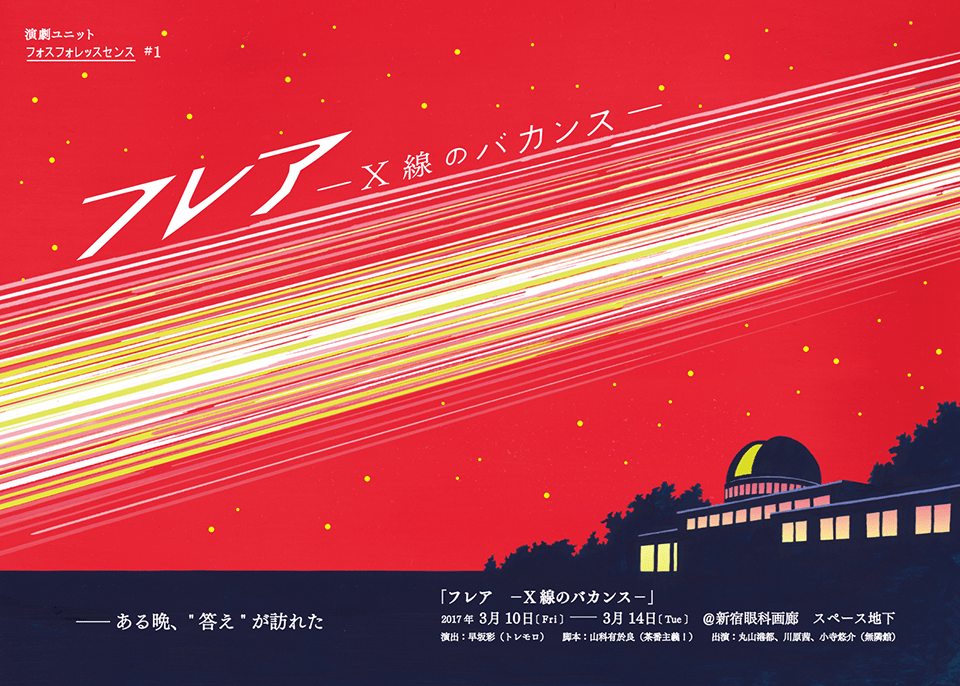

- 制作協力情報 -
 チケット予約サイトへフォスフォレッスセンス#1『フレアーX線のバカンスー』
脚本：山科有於良(茶番主義！)
演出：早坂彩(トレモロ)
公演詳細はこちら
ある晩、"答え"が訪れた
地上。そして未来。小さな島国の標高 432m の山の上に建てられた天文台。その若い 天文学者は苛立っていた。宇宙研究の主力は、宇宙望遠鏡とその情報をもとに惑星探査 を行う工学者とに奪われ、天文学者はその存在意義を失っていた。そしてある晩、ひとりの女が訪れる。彼女は、地球の外からやってきた生き物だと名乗 る。しきりに地球のことを知りたがり、自分の想い出を語りたがる女。女は狂人なのか、 それとも"本物”なのか。確信がもてないままに、天文学者は女の話に耳を傾ける。
女が語る、21光年のバカンスの想い出。憧れ続けた宇宙の世界に男は徐々に引き込まれていく。
2017年3月10日 〜 3月14日【全9回】
- 10日 19:30
- 11日 14:00/18:00
- 12日 14:00/18:00
- 13日 14:00/19:30
- 14日 14:00/19:30
前売
2500円
当日
3000円@新宿眼科画廊 スペース地下 (http://www.gankagarou.com/)
JR新宿駅東口より徒歩12分／地下鉄東新宿駅より徒歩6分／地下鉄新宿三丁目駅より徒歩7分 チケット予約サイトへ